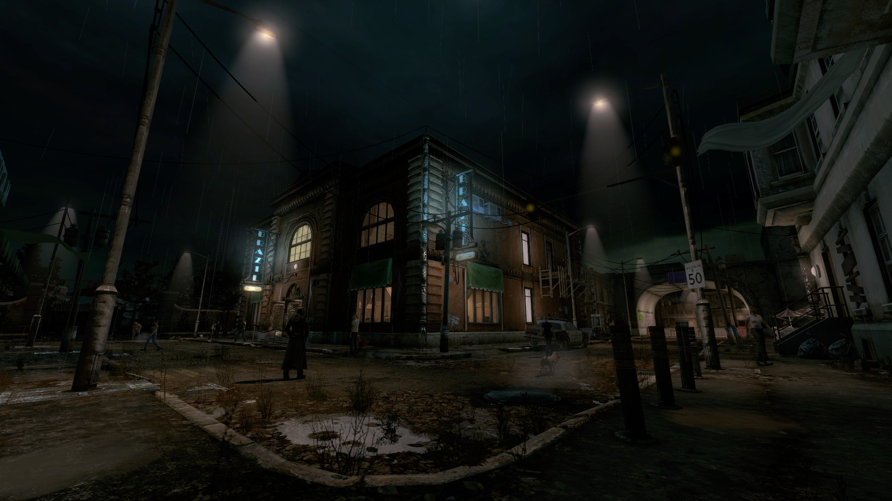
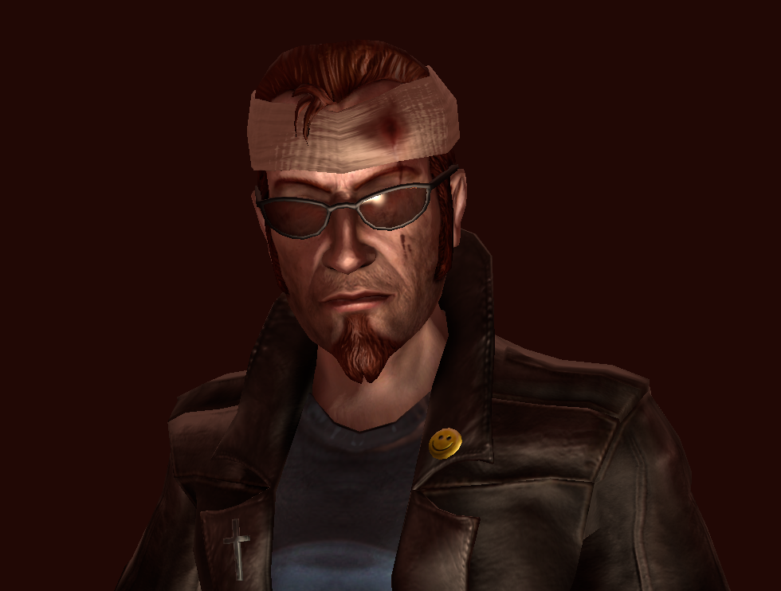

Catharsis Reborn
A total conversion mod for Postal III that acts as a free unofficial sequel to POSTAL 2 and its expansion, Apocalypse Weekend. The mod overhauls vanilla Postal III by fixing numerous base game bugs, introducing an all new story, new maps, missions, weapons and more, based on original designs and early previews of Postal III from 2007-2009. Like POSTAL 2, CR's gameplay is designed around an open world which can be freely explored.I'm currently one of the programmers @Whackjob Interactive, working on Catharsis Reborn!
Check out the Catharsis Reborn Website for more details!
- Game Engine: Source Engine
- Status: [Beta Demo] - IN ACTIVE DEVELOPMENT!

